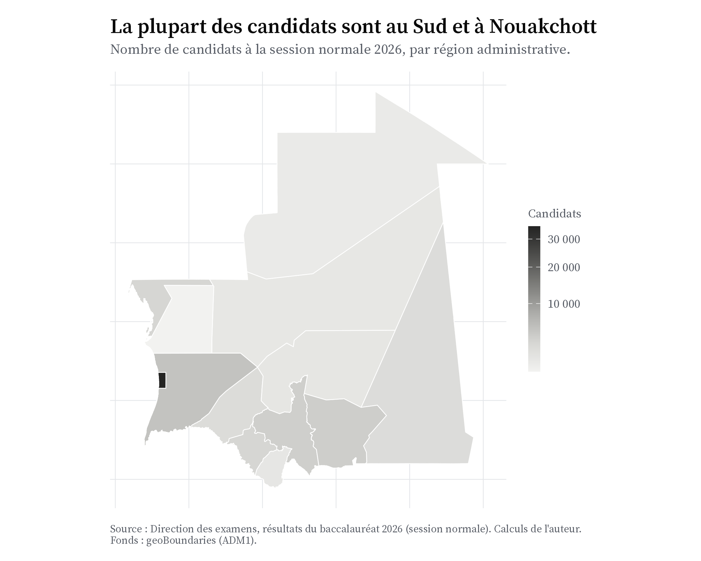
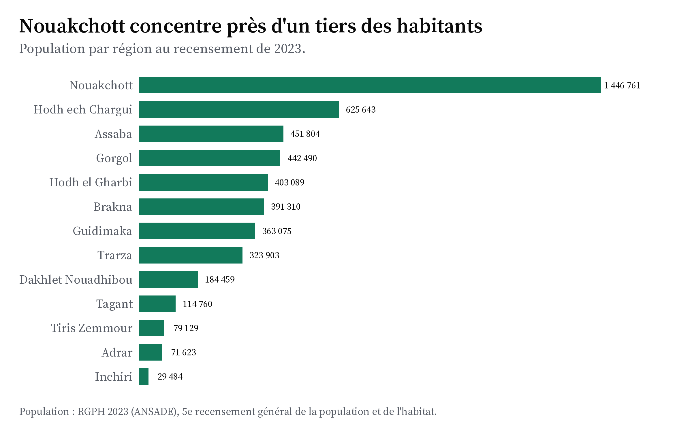
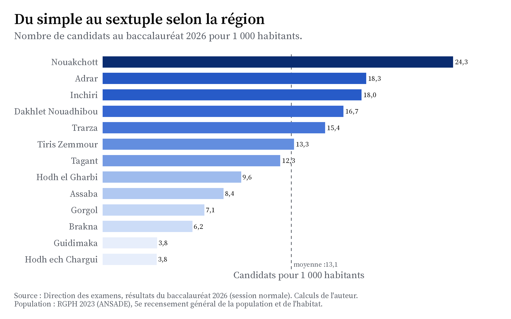
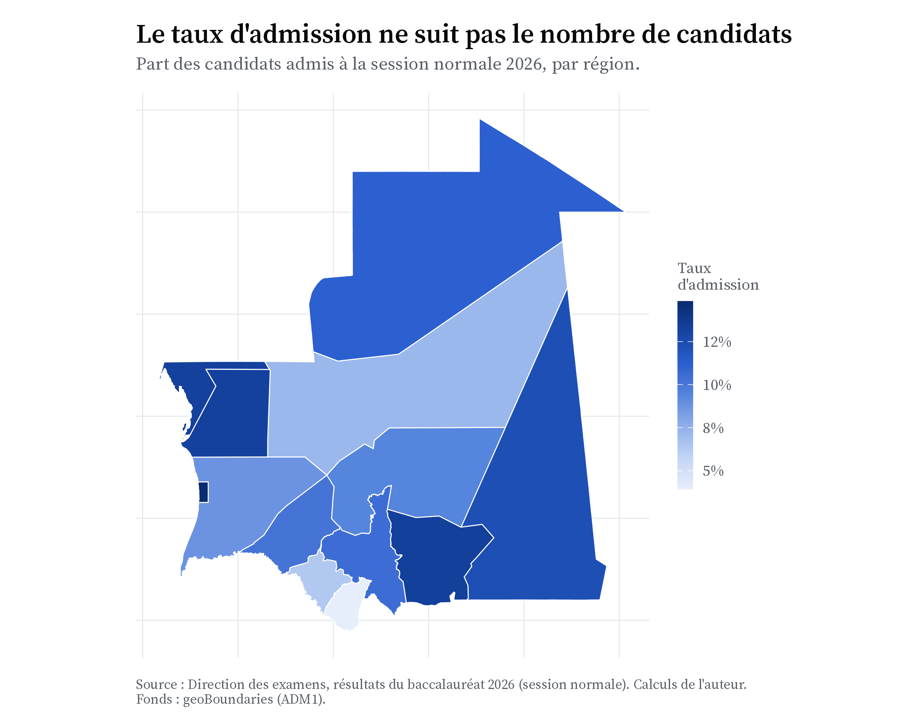
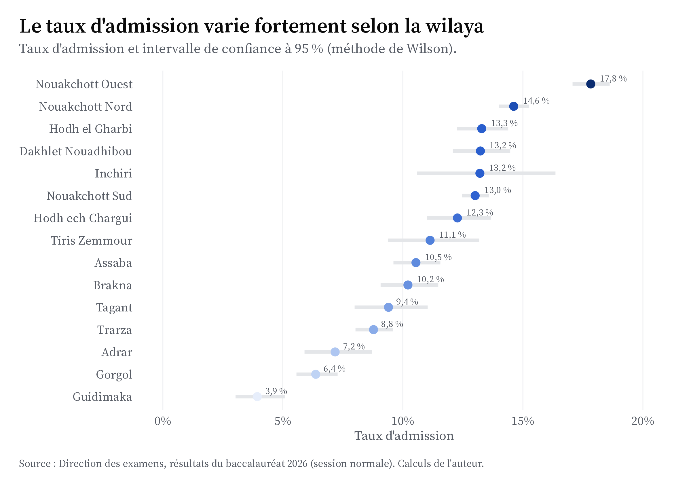
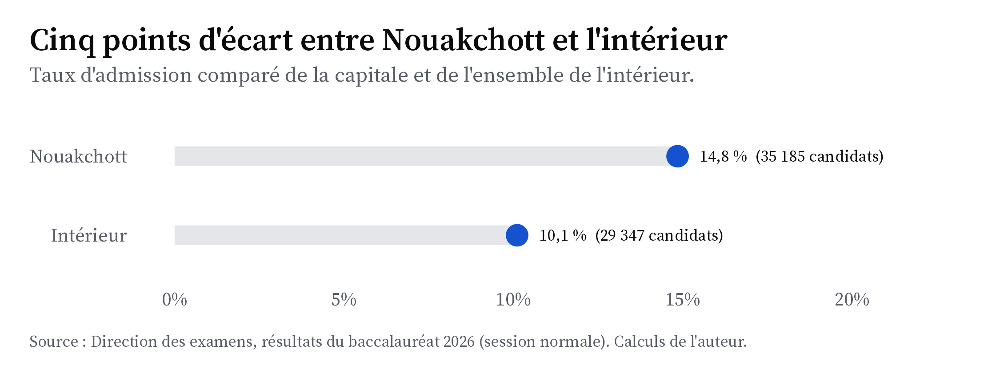

La carte de la réussite
La Mauritanie est un grand pays peu peuplé. Ses quinze wilayas ne réussissent pas toutes de la même façon au baccalauréat.
La population mauritanienne se concentre surtout dans le Sud et dans la capitale. Le Nord, en grande partie désertique, est presque vide. Le baccalauréat suit cette répartition : la plupart des candidats composent à Nouakchott ou dans les wilayas du Sud, tandis que les régions du Nord ne comptent que quelques centaines de candidats. Cette page regarde trois choses : combien de candidats compte chaque région, ce que cela représente rapporté à sa population, et quelle part d’entre eux réussit.
Où se trouvent les candidats
Commençons par le nombre de candidats. La première carte colore chaque région selon le nombre de candidats qui y ont composé. Le contraste entre le Sud-Ouest et le Nord est immédiat.
Nouakchott rassemble à elle seule plus de la moitié des candidats du pays. En y ajoutant les wilayas du fleuve (Trarza, Gorgol, Brakna), on obtient la grande majorité des candidats. Les régions du Nord, comme le Tiris Zemmour, l’Adrar ou l’Inchiri, en comptent chacune quelques centaines seulement.
Rapporté à la population
Ce nombre de candidats dépend d’abord de la population de chaque région. Pour comparer les régions à leur juste mesure, il faut donc rapporter les candidats au nombre d’habitants. On utilise pour cela les chiffres du dernier recensement (RGPH 2023), qui donne une population totale de 4 927 530 habitants. Voici d’abord cette population, région par région.

On peut maintenant calculer le nombre de candidats pour 1 000 habitants dans chaque région. Ce chiffre mesure la place du baccalauréat dans la population, indépendamment de la taille de la région. En moyenne nationale, on compte 13,1 candidats pour 1 000 habitants.

L’écart est frappant. Nouakchott envoie plus de 24 candidats pour 1 000 habitants, contre moins de 4 dans le Guidimaka et le Hodh ech Chargui : un rapport de un à six. Les régions urbaines et du Nord (Adrar, Inchiri, Dakhlet Nouadhibou) se situent bien au-dessus de la moyenne, tandis que les régions rurales du Sud restent nettement en dessous. Ce chiffre ne mesure pas la réussite, mais l’accès à la scolarité : là où peu de jeunes atteignent la terminale, peu de candidats se présentent, quelle que soit leur valeur.
Où l’on réussit
Voici maintenant la carte du taux d’admission. Cette fois, la couleur ne montre plus le nombre de candidats, mais la part de ceux qui sont admis dans chaque région.

En comparant la carte des candidats et celle du taux d’admission, on remarque quelque chose d’intéressant. Les régions qui ont le plus de candidats ne sont pas forcément celles qui réussissent le mieux. Certaines wilayas de l’intérieur, avec peu de candidats, ont de bons taux d’admission. Le nombre de candidats détermine le nombre d’admis, mais pas les chances de réussir.
Le classement et sa marge d’erreur
Une carte permet mal de comparer des valeurs proches. Le graphique suivant classe donc les quinze wilayas par taux d’admission. Ici, Nouakchott est de nouveau séparée en ses trois wilayas. Chaque barre est accompagnée de son intervalle de confiance à 95 % (méthode de Wilson) : quand une région a peu de candidats, l’estimation est moins sûre, et le segment est plus long.

L’écart entre la première et la dernière wilaya est important : Nouakchott Ouest, en tête avec près de 18 %, admet environ quatre fois plus que le Guidimaka, en bas de classement sous les 4 %. Mais les intervalles de confiance des petites régions sont larges. Avec seulement quelques centaines de candidats, il ne faut pas prendre le classement au rang près. On retiendra la tendance générale, pas la position exacte.
Nouakchott et l’intérieur
Faut-il opposer Nouakchott au reste du pays ? La capitale a plus de moyens et plus d’établissements, on peut donc s’attendre à ce qu’elle réussisse mieux. C’est le cas, mais l’écart reste mesuré : environ cinq points séparent la capitale de l’intérieur.

Nouakchott admet une part plus élevée que l’intérieur (près de 15 % contre 10 %), mais cet écart de cinq points reste modéré au regard des différences entre wilayas, qui vont du simple au quadruple. Certaines régions de l’intérieur, comme le Hodh el Gharbi, rivalisent d’ailleurs avec les wilayas de la capitale. Les vraies différences se jouent donc surtout au niveau des wilayas et des établissements. Pour aller plus loin, il faut mesurer ce qui, dans le parcours de chaque candidat, joue vraiment sur ses chances. C’est le sujet de la page Réussir.